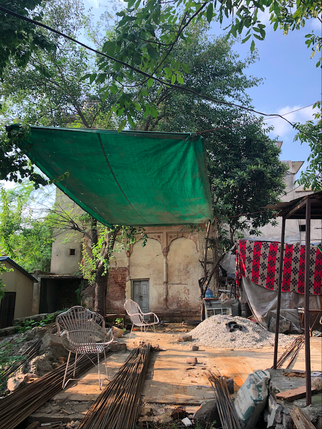

To my knowledge, there are four abandoned Hindu temples in Muzaffarabad today. After the tribal raid and the exodus of the local Hindu population, these religious shrines became the property of the local government. I have personally visited 3 of them. All of them are in extreme deteriorating conditions and are in need of dire attention from the municipal authorities.
Census of India, 1931: Jammu and Kashmir State
District Muzaffarabad (Muzaffarabad Town, Uri and Karnah)
Muslims: ---------- 245,858
Hindus: ---------- 18,813
Temple on Bank Road
Google MapsThis temple is located about 100 feet above the Neelum (Kishenganga) River bank, about 200 meters downhill from Sultan's residence (old Kachehri) and along the old "Shah Nara" Creek. Today, it is clustered in the middle of various shops and is now being used as a storage facility by the local government. Temple is not visible on the road, you must go behind the bank in order to see it. I visited this temple in my 2016 trip. From my historic estimation, this temple was originaly built in an empty terrace which had the old Muzaffarabad with Shah's residence (Kashmiri Muhalla) on one side and Kishenganga (Nelum) River on the other.
Temple in Medinah Market
Google Maps
I was unable to access this site due to it being walled off. I was told that it is a private property and the owner is out of town. Structure of this temple is very similar to the Bank Road one. It seemed to also be in a deteriorating condition and many houses had been built around it. Before the Tribal raid of 1947, area now compromised of Medinah Market used to be empty agricultural fields. I'm assuming this temple was built in the middle of the field, at somewhat same timeframe as the Bank road one.
Temple across Saheli Sarkar
Google MapsI have not visited this temple, but have seen a video of it. It also seems to have been built in a similar style. This temple is located right across the famous mystic shrine of Sufi Saheli Sarker. I assume the temple to be much older than the shrine, since Saheli Sarker passed away in early 1900's.
Bara Dari Temples
Google MapsRemains of various statues are still visible in the famous Bara-Dari, below the Domel Bridge. In old pictures of the Bara Dari, you can clearly see idols resting on placed which are seen empty today.